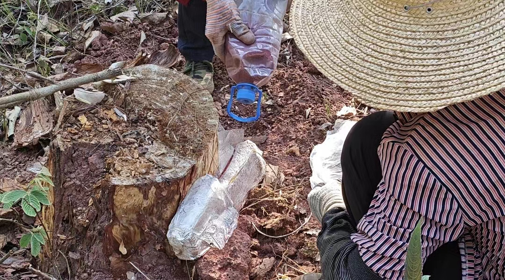
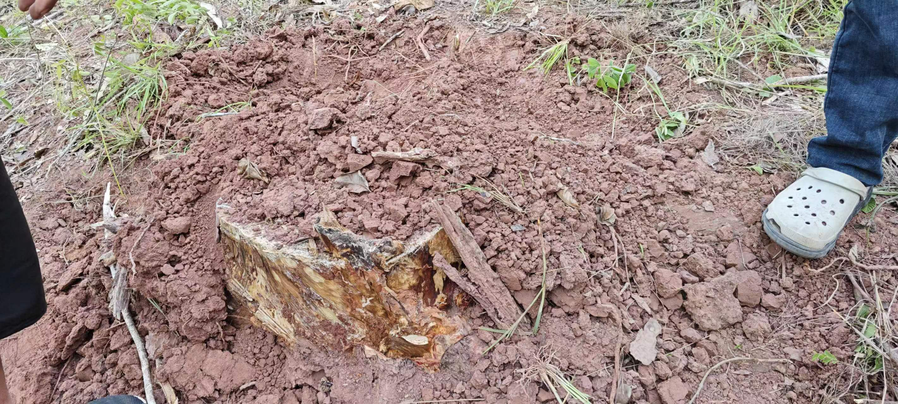
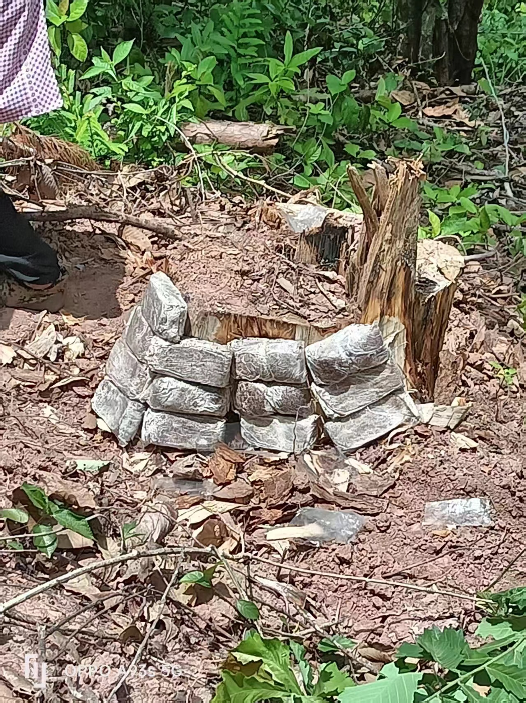
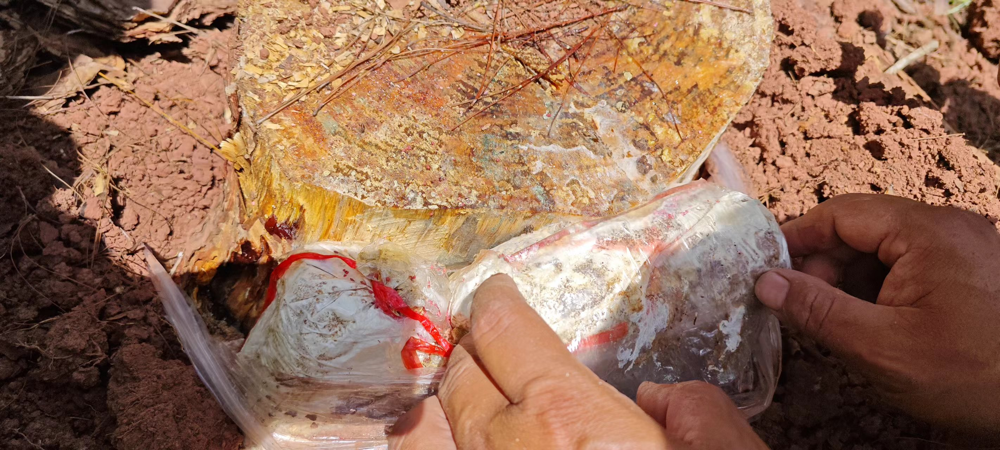

种植基地信息
基源：品为百合科植物光叶菝葜Smilax glabra Roxb.的干燥根茎。
供应商名称：普洱采苓生物科技有限公司
基地名称：茯苓基地789亩
基地面积：789.00亩
地址：云南省普洱市思茅区
经度：100.909931
纬度：22.936531
种植溯源
种植周期：2024-05-20-2025-04-15
种植批号：FLJDM-YFL-11631
病虫害防治
执行时间：2024年05月25日
操作人：普洱采苓生物科技有限公司

整地
执行时间：2024年06月05日
操作人：普洱采苓生物科技有限公司

大田种植
执行时间：2024年06月26日
操作人：普洱采苓生物科技有限公司

田间管理
执行时间：2024年07月11日
操作人：普洱采苓生物科技有限公司

采收信息
采收批号：YFLF20250825004BDRREIK
采收时间：2024年12月10日
采收方式：机器采收
采收部位：其他
采收重量（批）：710000.0kg
采收重量（总计）：710000.0kg
初加工信息
初加工批号：CJG202508258261
初加工时间：2024年12月15日
初加工工艺：干燥、发汗、切制、去皮
初加工等级：乱坨
初加工产量（批）：250000.0kg
初加工产量（总计）：250000.0kg